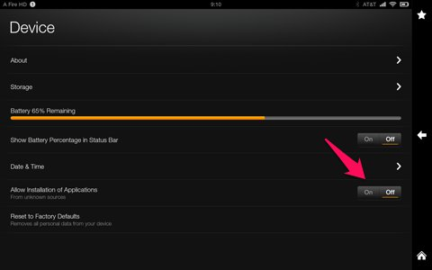

How can I install Estante onto my device from a Web link?
Instructions
Type the web address maf.org/estante into your Web browser and go to that site. Or, on your device, open up the e-mail inviting you to download Estante and tap on the link.
Login in or register for an account. Be sure to fill in all the areas with a pink asterisk.
After you fill out the account information, you will be redirected to the download page. You will also receive an email with the download link. Tap on the file download link (from either your email or on the Estante download page). The app will start downloading to the Downloads folder on your device.
On your device, tap the Apps icon and search for the Downloads icon.
Tap on the downloads folder. This will take you directly to the folder where the Estante app was downloaded.
Tap on the Estante file to install it.
When you tap on the file, some devices (like a Kindle or Nook) have default settings that won’t allow installation of programs from an unknown source. Do the following to allow Estante to be installed:
Follow the instructions on your device on how to change the settings. For the Kindle, tap on “Settings”.
From the device’s Settings screen, tap on “Allow installation of Applications” to toggle it from “off” to “on”.
You may get another warning window, tap “OK”.
You may get a pop-up window showing what will be done during installation, depending on your device. Tap “Install”
An installation screen will appear and show the progress of installing the file.
When Estante is finished installing you should see the message “Application installed.” Tap “Open” to start working with Estante.
Instructions with screen shots
Note: The screen shots included here are for a specific device and are for example only. Your device will likely have a different look but the procedure should be about the same.
Type the web address maf.org/estante into your Web browser and go to that site. (Or, on your device, open up the e-mail inviting you to download Estante and tap on the link.) You will see this page first:
Scroll down to login, or register for an account if you are new to the site. Fill in all the areas with a pink asterisk.
After you fill out the account information, check your email (on your device) for the installation file. Tap on the file. The program will start automatically downloading to your download folder on your device.
On your device, tap on the Apps button and search for your Downloads icon.
Tap on the downloads folder. This will take you directly to the folder where the Estante app was downloaded.
Tap on the Estante file.
When you tap on the file, some devices (like a Kindle or Nook) have default settings that won’t allow installation of programs from an unknown source.
Follow the instructions on your device on how to change the settings. For the Kindle, tap on “Settings”.
From the Device settings mode, tap on “Allow installation of Applications” to toggle it form “off” to “on”.

You may get another warning window, tap “ok”
You may get a pop-up window, showing what will be done during installation, depending on your device. Tap “Install”.
An installation screen will come up to show the processing being done to install the file:
When Estante is finished installing you should see the message “Application installed.” Tap open to start working with Estante.